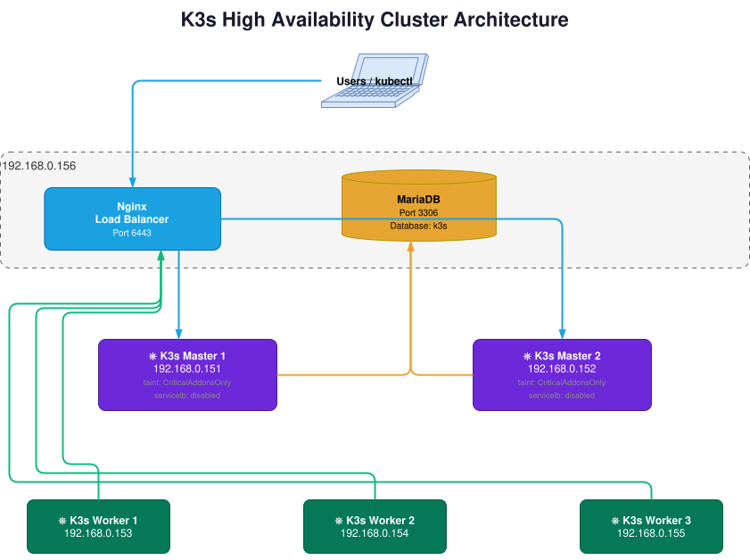

k8s-HA — High Availability Kubernetes Cluster¶
A self-hosted Highly Available (HA) Kubernetes cluster built on k3s, designed to run on bare-metal or home-lab hardware.
What is Kubernetes?¶
Kubernetes (often abbreviated as k8s) is an open-source container orchestration platform originally developed by Google and donated to the Cloud Native Computing Foundation (CNCF) in 2014. It automates the deployment, scaling, and management of containerized applications.
At its core, Kubernetes lets you describe what you want your system to look like (declarative configuration), and it continuously works to make reality match that description.
What Problems Does It Solve?¶
| Without Kubernetes | With Kubernetes |
|---|---|
| Manual container restarts on crash | Automatic pod rescheduling |
| Complex rolling updates | Built-in rolling deployments & rollbacks |
| Static port/IP management | Dynamic service discovery & load balancing |
| Scaling requires human intervention | Horizontal Pod Autoscaler (HPA) |
| No built-in secrets management | Kubernetes Secrets & ConfigMaps |
Kubernetes Node Types¶
A Kubernetes cluster is made up of two categories of machines called nodes:
Control Plane Nodes (Masters)¶
The control plane is the brain of the cluster. It manages scheduling, state, and the cluster API. It runs the following components:
| Component | Role |
|---|---|
| kube-apiserver | The front-door HTTP API for all cluster operations |
| etcd | Distributed key-value store — holds all cluster state |
| kube-scheduler | Decides which node each pod runs on |
| kube-controller-manager | Runs controllers (e.g. ReplicaSet, Node lifecycle) |
In this setup
This project uses k3s instead of vanilla Kubernetes. k3s replaces etcd with an external MariaDB database for cluster state, which simplifies HA master scaling.
Worker Nodes¶
Worker nodes are the muscle — they run your actual application containers (pods). Each worker runs:
| Component | Role |
|---|---|
| kubelet | Agent that communicates with the API server and manages pods |
| kube-proxy | Maintains network rules for pod-to-pod and service routing |
| Container runtime | Runs the containers (e.g. containerd, Docker) |
Kubernetes Providers & Distributions¶
There are many ways to run Kubernetes depending on your environment and use case:
| Provider | Description |
|---|---|
| Minikube | Single-node cluster on your laptop — great for learning and local dev |
| kind | Kubernetes IN Docker — runs nodes as Docker containers |
| k3d | Runs k3s clusters inside Docker |
| Docker Desktop | Bundled single-node k8s for Mac/Windows dev environments |
| Provider | Description |
|---|---|
| k3s ⭐ | Lightweight, production-ready Kubernetes — used in this project |
| kubeadm | Official bootstrapping tool for full Kubernetes clusters |
| RKE2 | Rancher's hardened, CNCF-conformant Kubernetes distro |
| Talos Linux | Immutable OS designed specifically to run Kubernetes |
| Provider | Description |
|---|---|
| EKS (AWS) | Elastic Kubernetes Service — AWS managed control plane |
| AKS (Azure) | Azure Kubernetes Service — Microsoft managed control plane |
| GKE (Google) | Google Kubernetes Engine — the original, highly optimized |
| DigitalOcean DOKS | Simple, affordable managed k8s for smaller workloads |
Why k3s for this project?
k3s bundles everything into a single binary (~70 MB), has minimal resource overhead, and supports external datastores like MariaDB — making it ideal for bare-metal and home-lab HA setups.
What is a High Availability (HA) Setup?¶
In a standard (non-HA) Kubernetes cluster, there is a single master node. If it goes down — for any reason (reboot, hardware failure, network issue) — the entire cluster control plane becomes unavailable. No new pods can be scheduled, no deployments can be applied, and kubectl stops working.
A High Availability setup eliminates this single point of failure by running multiple master nodes that all share the same cluster state.
┌─────────────┐
┌────────────▶ │ Master 1 │
│ └─────────────┘
kubectl ──▶ Nginx LB
│ (port 6443)┌─────────────┐
└────────────▶ │ Master 2 │
└─────────────┘
│
┌─────┴──────┐
│ MariaDB │ ← shared cluster state
└────────────┘
Further hardening
For a production-grade HA setup, you would also replicate the database (MariaDB Galera Cluster) and add redundancy to the load balancer (e.g. keepalived + VRRP). This project focuses on multi-master HA as the primary goal.
Why Nginx as the Load Balancer?¶
When you have multiple k3s master nodes, every client (kubectl, workers, CI/CD) needs to know which master to talk to. You can't hardcode a single master IP because that master might be down.
Nginx solves this with its stream {} block, which operates at Layer 4 (TCP) — it blindly forwards raw TCP connections to whichever upstream master is healthy. This is simpler and more efficient than an HTTP (Layer 7) proxy for this use case because:
- The Kubernetes API server speaks TLS-encrypted binary over port
6443— not plain HTTP - Nginx does not need to understand the protocol, just forward bytes
- It performs health checks and automatically stops routing to a down master
Nginx vs Alternatives¶
| Option | Layer | Notes |
|---|---|---|
| Nginx (stream) ⭐ | L4/TCP | Simple, lightweight, exactly what's needed here |
| HAProxy | L4/L7 | More powerful, very popular for k8s HA |
| kube-vip | L4 | Runs inside k8s itself — no separate machine needed |
| Cloud LB (ELB, etc.) | L4/L7 | Managed, but requires cloud provider |
| keepalived + VIP | L3 | Pure IP failover, no load balancing |
In this project Nginx runs in a Docker container on the infrastructure machine — meaning it's quick to deploy, easy to reconfigure, and doesn't pollute the host system.
Architecture¶

Key Components¶
| Component | Role |
|---|---|
| k3s | Lightweight, production-ready Kubernetes distribution |
| Nginx (TCP stream) | Layer-4 load balancer for the k8s API server (port 6443) |
| MariaDB | External datastore for k3s cluster state (replaces embedded etcd) |
| MetalLB | Bare-metal LoadBalancer implementation — assigns real IPs to Service objects |
Prerequisites¶
- A machine to host the Nginx load balancer and MariaDB (e.g.
192.168.0.156) - At least 2 machines for k3s master nodes
- At least 3 machines for k3s worker nodes
- A local subnet with free IP addresses for MetalLB to assign (e.g.
192.168.0.170–192.168.0.175)
Setup Guide¶
-
Set up Nginx as a TCP-level load balancer for the k8s API server.
-
Deploy MariaDB as the external datastore for k3s cluster state.
-
Bootstrap the k3s master nodes with HA configuration.
-
Join worker nodes to the k3s cluster.
-
Install and configure MetalLB for bare-metal LoadBalancer support.
-
Validate the setup with a test pod and LoadBalancer service.